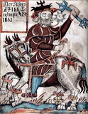
Odinwiki-fr
Thorwiki-fr
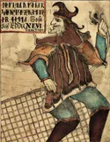
Lokiwiki-fr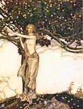
Freyjawiki-fr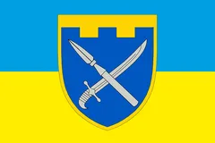
Freyrbing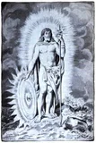
Baldrwiki-fr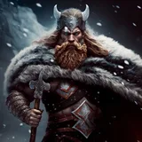
Týrimposée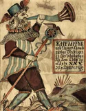
Heimdallwiki-fr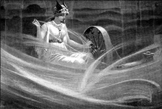
Friggwiki-fr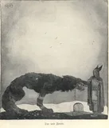
Fenrirwiki-fr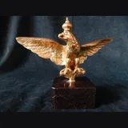
Jörmungandrbing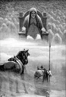
Helwiki-fr
Rêbing
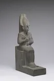
Osiriswiki-fr
Isiswiki-fr
Horusbing
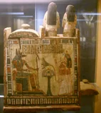
Anubiswiki-fr
Sethbing
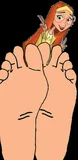
Thotbing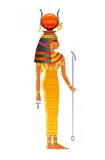
Hathorimposée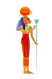
Sekhmetimposée
Bastetbing
Ptahbing
Amonbing
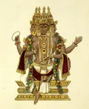
Brahmāwiki-fr
Vishnuwiki-fr
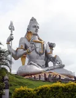
Shivawiki-fr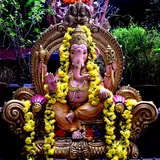
Ganeshwiki-fr
Hanumānwiki-fr
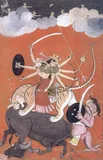
Durgawiki-fr
Kalibing
Lakshmiwiki-fr
Sarasvatibing
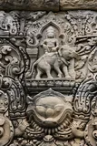
Indrawiki-fr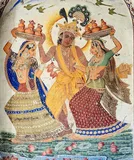
Krishnawiki-fr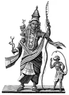
Rāmawiki-fr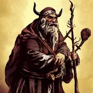
Dagdaimposée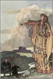
Morriganwiki-fr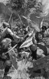
Lughwiki-fr
Brigidwiki-fr
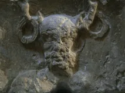
Cernunnoswiki-fr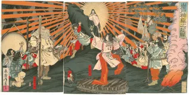
Amaterasuwiki-fr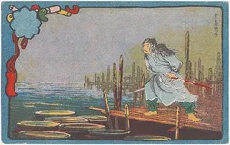
Susanooimposée
Tsukuyomibing
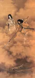
Izanagiwiki-fr Izanamiwiki-fr
Izanamiwiki-fr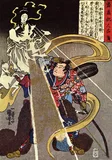
Inariwiki-fr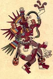
Quetzalcóatlwiki-fr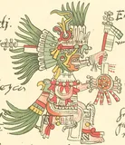
Huitzilopochtliwiki-fr
Tlalocbing
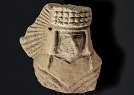
Xochiquetzalwiki-fr
Kukulcanwiki-fr
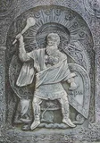
Pérounwiki-fr
Vélèswiki-fr
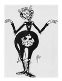
Anansiwiki-fr
Panguwiki-fr
Nuwabing
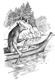
Coyotewiki-fr